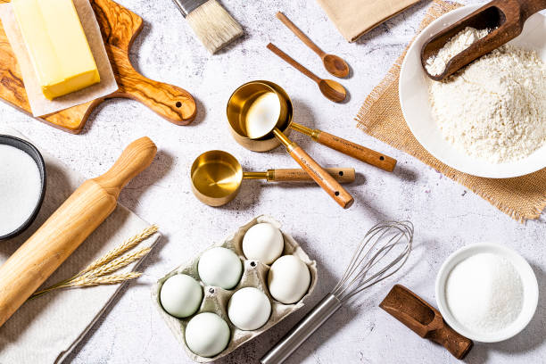
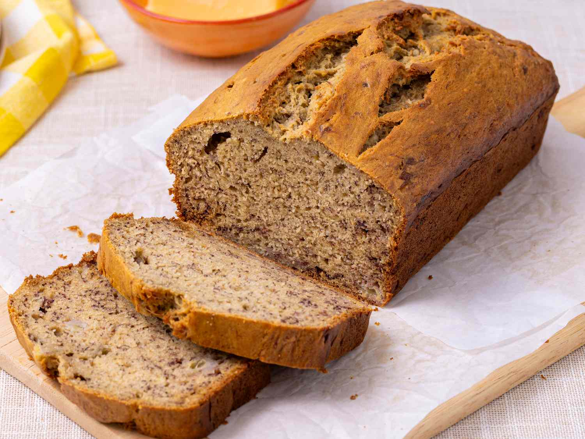
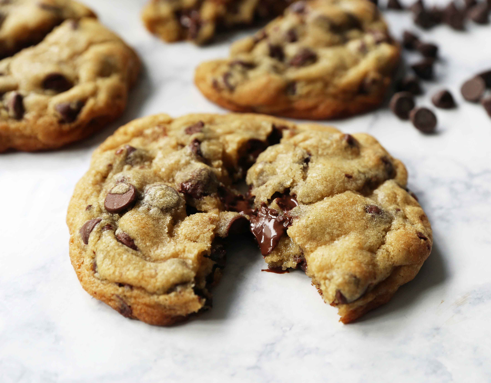
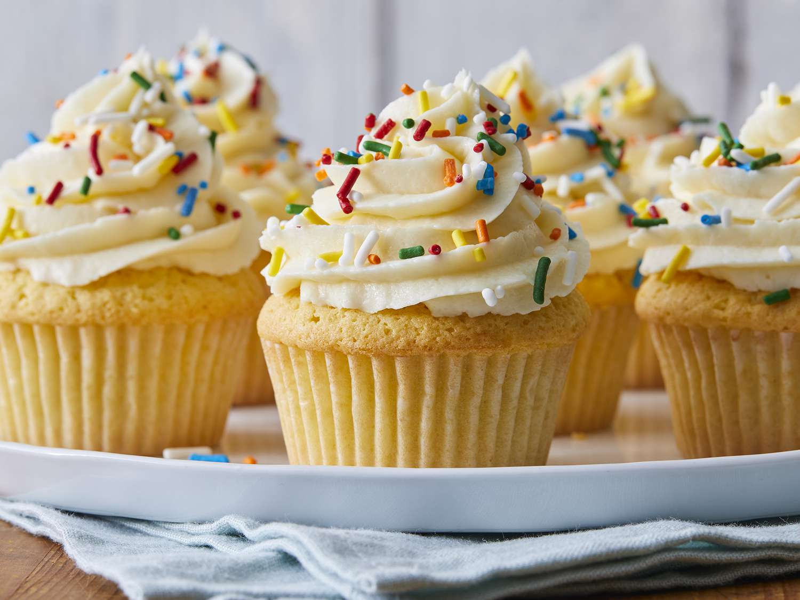

Start with these simple and foolproof recipes — eachone perfect for new bakers looking for quick success

Welcome to the heart of Bake & Bloom — the recipes! Here, you’ll find simple, foolproof treats that anyone can make, even if it’s your very first time turning on the oven. Each recipe is designed to teach basic baking skills while giving you delicious results that you’ll be proud to share. Whether you’re craving something chewy, creamy, or fluffy, these recipes will help you build confidence one bake at a time.
Every recipe on this page includes clear instructions, everyday ingredients, and helpful tips to make the process stress-free. You won’t need fancy tools or complicated steps — just a bowl, a whisk, and a little curiosity. From classic chocolate chip cookies to rich, creamy cheesecake, these beginner-friendly bakes are made to guarantee sweet success.
As you explore, don’t be afraid to get creative! Try adding your favorite toppings, experimenting with flavors, or sharing your own twist on a recipe. Baking isn’t just about following directions — it’s about having fun and learning along the way. So preheat your oven, grab your mixing spoon, and let’s bake something wonderful together.

Moist, soft, and naturally sweet — the perfect way to use ripe bananas.

Crispy on the edges, chewy in the center, and packed with melty chocolate.


Light, fluffy, and perfectly sweet — a classic treat for any occasion.